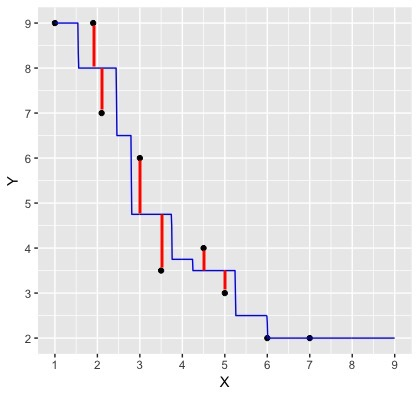

Compute the Euclidean distance between points on a graph
Implement the K-nearest neighbours classification algorithm
Describe the importance of a training and test set in machine learning
Explain the use and importance of cross-validation
Compare and contrast a variety of performance metrics
Execute the K-nearest neighbours regression algorithm
Understand the difference between regression and classification
1. Classification
Machine learning is a field where computers learn from data and make decisions and predictions. Classification is a type of machine learning, where the goal is to predict a categorical class of an observation given other variables (features). For example:
Classifying an email as “spam” or “not spam”
Classifying a medical test as “positive” or “negative”
Classifying a bank transaction as fraudulent or not
Suppose we have past data of cancer tumour cell diagnosis labelled “benign” and “malignant”. Do you think a new cell with Concavity = 3.3 and Perimeter = 0.2 would be malignant? How did you decide?
What kind of data analysis question is this?
Descriptive, exploratory, predictive, inferential, causal, or mechanistic?
1.2 Training and Test Sets
When building a machine learning model, typically we start by dividing our data into two sets: 1) Training set 2) Test set
The training set is a subset of our data that is used is to train or teach our model to perform sort of predictive task. Then, using our test set, we can evaluate how well our model performs on unseen data.
There are two important things to do when splitting data.
Shuffling: randomly reorder the data before splitting
Stratification: make sure the two split subsets of data have roughly equal proportions of the different labels
Golden Rule of Machine Learning / Statistics:
Don’t use your testing data to train your model!
Showing your classifier the labels of evaluation data is like cheating on a test; it’ll look more accurate than it really is.
1.3 K-nearest neighbours classification
Predict the label / class for a new observation using the K closest points from our dataset.
Compute the distance between the new observation and each observation in our training set
The new point is at perimeter \(= 0.2\), concavity \(= 3.3\)
Recall that the training dataset is the sample of data used to fit the model.
Suppose we have a set of data and we want to predict the class of a new observation. We first want to calculate the distance between the new observation and the other points and predict the label / class for a new observation using the \(K\) closest points from our dataset.
Sort the data in ascending order according to the distances
Choose the top K rows as “neighbours”
## # A tibble: 5 x 5
## ID Perimeter Concavity Class dist_from_new
## <dbl> <dbl> <dbl> <fct> <dbl>
## 1 86409 0.241 2.65 B 0.881
## 2 887181 0.750 2.87 M 0.980
## 3 899667 0.623 2.54 M 1.14
## 4 907914 0.417 2.31 M 1.26
## 5 8710441 -1.16 4.04 B 1.28
Classify the new observation based on majority vote.
What would the predicted class be?
We can go beyond 2 predictors!
For two observations \(u, v\), each with \(m\) variables (columns) labelled \(1, \dots, m\),
When using K-nearest neighbour classification, the scale of each variable (i.e., its size and range of values) matters. e.g. Salary (10,000+) and Age (0-100)
Since the classifier predicts classes by identifying observations that are nearest to it, any variables that have a large scale will have a much larger effect than variables with a small scale.
But just because a variable has a large scale doesn’t mean that it is more important for making accurate predictions.
For example, suppose you have a data set with two attributes, height (in feet) and weight (in pounds).
distance1 = sqrt((202 - 200)^2 + (6 - 6)^2) = 2
distance2 = sqrt((200 - 200)^2 + (8 - 6)^2) = 2
Here if we calculate the distance we get 2 in both cases! A difference of 2 pounds is not that big, but a different in 2 feet is a lot. So how can we adjust for this?
Nonstandardized Data vs. Standardized Data
What if one variable is much larger than the other?
Standardize: shift and scale so that the average is 0 and the standard deviation is 1.
Standardization: when all variables in a data set have a mean (center) of 0 and a standard deviation (scale) of 1, we say that the data have been standardized.
In the plot with the original data above, its very clear that K-nearest neighbours would classify the red dot (new observation) as malignant. However, once we standardize the data, the diagnosis class labelling becomes less clear, and appears it would depend upon the choice of \(K\).
Thus, standardizing the data can change things in an important way when we are using predictive algorithms. As a rule of thumb, standardizing your data should be a part of the preprocessing you do before any predictive modelling / analysis.
1.5 tidymodels package in R
tidymodels is a collection of packages and handles computing distances, standardization, balancing, and prediction for us!
# Data on cancer tumorstumors <-read_csv("data/clean-wdbc.data.csv") |>mutate(Class =as_factor(Class))head(tumors)
Rows: 569 Columns: 12
── Column specification ────────────────────────────────────────────────────────
Delimiter: ","
chr (1): Class
dbl (11): ID, Radius, Texture, Perimeter, Area, Smoothness, Compactness, Con...
ℹ Use `spec()` to retrieve the full column specification for this data.
ℹ Specify the column types or set `show_col_types = FALSE` to quiet this message.
A tibble: 6 × 12
ID
Class
Radius
Texture
Perimeter
Area
Smoothness
Compactness
Concavity
Concave_points
Symmetry
Fractal_dimension
<dbl>
<fct>
<dbl>
<dbl>
<dbl>
<dbl>
<dbl>
<dbl>
<dbl>
<dbl>
<dbl>
<dbl>
842302
M
1.8850310
-1.35809849
2.3015755
1.9994782
1.3065367
2.6143647
2.1076718
2.2940576
2.7482041
1.9353117
842517
M
1.8043398
-0.36887865
1.5337764
1.8888270
-0.3752817
-0.4300658
-0.1466200
1.0861286
-0.2436753
0.2809428
84300903
M
1.5105411
-0.02395331
1.3462906
1.4550043
0.5269438
1.0819801
0.8542223
1.9532817
1.1512420
0.2012142
84348301
M
-0.2812170
0.13386631
-0.2497196
-0.5495377
3.3912907
3.8899747
1.9878392
2.1738732
6.0407261
4.9306719
84358402
M
1.2974336
-1.46548091
1.3373627
1.2196511
0.2203623
-0.3131190
0.6126397
0.7286181
-0.8675896
-0.3967505
843786
M
-0.1653528
-0.31356043
-0.1149083
-0.2441054
2.0467119
1.7201029
1.2621327
0.9050914
1.7525273
2.2398308
In tidymodels, the recipes package is named after cooking terms.
1. Make a recipe to specify the predictors/response and preprocess the data
recipe(): Main argument in the formula.
Arguments:
formula
data
prep() & bake(): you can also prep and bake a recipe to see what the preprocessing does!
The prep() function computes everything so that the preprocessing steps can be executed
The bake() function takes a recipe and applies it to data and returns data
visit https://recipes.tidymodels.org/reference/index.html to see all the preprocessing steps
── Recipe ──────────────────────────────────────────────────────────────────────
── Inputs
Number of variables by role
outcome: 1
predictor: 2
── Operations
• Centering for: all_predictors()
• Scaling for: all_predictors()
2. Build a model specification (model_spec) to specify the model and training algorithm
model type: kind of model you want to fit
arguments: model parameter values
engine: underlying package the model should come from
mode: type of prediction (some packages can do both classification and regression)
# Build a model specification using nearest_neighbortumor_model <-nearest_neighbor(weight_func ="rectangular", neighbors =3) |>set_engine("kknn") |>set_mode("classification")tumor_model
K-Nearest Neighbor Model Specification (classification)
Main Arguments:
neighbors = 3
weight_func = rectangular
Computational engine: kknn
3. Put them together in a workflow and then fit it
We may want to use our recipe across several steps as we train and test our model. To simplify this process, we can use a model workflow, which pairs a model and recipe together.
# Create a workflowtumor_workflow <-workflow() |>add_recipe(tumor_recipe) |>add_model(tumor_model)tumor_fit <- tumor_workflow |>fit(data=tumors)tumor_workflow
Downside: doesn’t tell you the type of mistake being made
Here is an example of confusion matrix with cancer diagnosis data we’ve seen before.
Truly Malignant
Truly Benign
Predicted Malignant
1
4
Predicted Benign
3
57
Typically we consider one of the class labels as “positive” - in this case the “Malignant” status is more interesting to researchers, hence we consider that label as “positive”.
Relabeling the above confusion matrix:
Truly Positive
Truly Negative
Predicted Positive
1
4
Predicted Negative
3
57
Note that: * Top left cell = # correct positive predictions. * Top row = # total positive predictions. * Left column = # truly positive observations.
In the above confusion matrix, precision = 1/(1+4) and recall = 1/(1+3).
Precision quantifies how many of the positive predictions the classifier made were actually positive. Intuitively, we would like a classifier to have a high precision: for a classifier with high precision, if the classifier reports that a new observation is positive, we can trust that the new observation is indeed positive.
Recall quantifies how many of the positive observations in the test set were identified as positive. Intuitively, we would like a classifier to have a high recall: for a classifier with high recall, if there is a positive observation in the test data, we can trust that the classifier will find it.
In-class Question
a 99% accuracy on cancer prediction may not be very useful. Why?
If we need patients with truly malignant cancer to be diagnosed correctly, what metric should we prioritize?
What if a classifier never guess positive except for the very few observations it is super confident in? What metric is affected?
To add evaluation into our classification pipeline, we:
i.) Split our data into two subsets: training data and testing data (discussed above).
ii.) Build the model & choose K using training data only (sometimes called tuning)
iii.) Compute performance metrics (accuracy, precision, recall, etc.) by predicting labels on testing data only
We’ll now talk about these steps below.
1.7 Choosing K (or, “tuning’’ the model)
Choosing K is part of training. We want to choose K to maximize performance, but: - we can’t use test data to evaluate performance (cheating!) - we can’t use training data to evaluate performance (that’s what we trained with, so poor evaluation of true performance)
Solution: Split the training data further into training data and validation data sets
a. Choose some candidate values of K b. Split the training data into two sets - one called the training set, another called the validation set c. For each K, train the model using training set only d. Evaluate accuracy (and/or other metrics of performance) for each using validation set only e. Pick the K that maximizes validation performance
But what if we get a bad training set? Just by chance?
Cross-Validation
We can get a better estimate of performance by splitting multiple ways and averaging. Here’s an example:
Underfitting & Overfitting
Overfitting: when your model is too sensitive to your training data; noise can influence predictions!
Underfitting: when your model isn’t sensitive enough to training data; useful information is ignored!
For KNN: small K overfits, large K underfits, both result in lower accuracy
1.8 Compute performance metrics
The role of the test data:
The Big Picture
Now, let’s put it all together and look into how to go about this process in R. First let’s split our data into training and test sets:
# Split dataset.seed(1) # set seed for reproducibilitytumor_split <-initial_split(tumors, prop =0.75, strata = Class)tumor_train <-training(tumor_split) # training set tumor_test <-testing(tumor_split) # testing set
What is the proportion of malignant tumors in our training set?
Note: In the worksheet, we will provide you with a \(K\) value to use and you won’t need to perform cross-validation, but it is still good to understand the motivation behind it!
Explain what a test and training data set are in your own words
Explain cross-validation in your own words
Imagine if we train and evaluate accuracy on all the data. How can I get 100% accuracy, always?
2. Regression
What if we want to predict a quantitative value instead of a class label? Say, the sale price of a home.
# Read in the datahousing <-read_csv("data/housing.csv")head(housing)
Rows: 932 Columns: 9
── Column specification ────────────────────────────────────────────────────────
Delimiter: ","
chr (3): city, zip, type
dbl (6): beds, baths, sqft, price, latitude, longitude
ℹ Use `spec()` to retrieve the full column specification for this data.
ℹ Specify the column types or set `show_col_types = FALSE` to quiet this message.
E.g.: predict the price of a 2000 square foot home (from this reduced dataset)
You can see that we have no observations of a house of size exactly 2,000 square feet
What are some ways you might predict the price?
2.1 K nearest neighbours regression
As in k-nn classification, we find the \(k\)-nearest neighbours (here \(k=5\)) in terms of the predictors
Then we average the values for the \(k\)-nearest neighbours, and use that as the prediction:
If we do that for a range of house sizes, we can draw the curve of predictions:
You can imagine doing this for all the possible input values and coming up with predictions everywhere
Connecting all these predictions with a line
one benefit is that it handles non-linearity well.
2.2 Model Evaluation and Tuning
We still have to answer these two questions:
Is our model any good?
How do we choose k?
The same general strategy as in classification works here!
Is our model any good?
The blue line depicts our predictions from k-nn regression. The red lines depict the error in our predictions, i.e., the difference between the \(i^\text{th}\) test data response and our prediction \(\hat{y}_i\):

We now have the errors for individual points. How could you combine these errors to report a single measure of error for our model?
We (roughly) add up these errors to evaluate our regression model - Not out of 1, but instead in units of the target variable (bit harder to interpret)
\(y_i\) is the observed value for the \(i^\text{th}\) test observation
\(\hat{y_i}\) is the predicted value for the \(i^\text{th}\) test observation
We choose \(K\) roughly the same way as before:
Cross validation:
Split data into \(C\) folds
Train
Evaluate model
Pick k that gives the lowest RMSPE on validation set
Train model on whole training dataset (not split into folds)
Evaluate how good the predictions are using the test data
The process is very similar to what we learned for classification, except for a few minor changes to our model:
# Split the dataset.seed(123)housing_split <-initial_split(housing, prop =0.75, strata = price)housing_train <-training(housing_split)housing_test <-testing(housing_split)# Standardize the training datahousing_recipe <-recipe(price ~ sqft, data = housing_train) |>step_scale(all_predictors()) |>step_center(all_predictors())# Specify the regression model housing_model <-nearest_neighbor(weight_func ="rectangular",neighbors =tune()) |>set_engine("kknn") |>set_mode("regression") # Note we change this to regression instead of classification# Set the folds for cross validationhousing_vfold <-vfold_cv(housing_train, v =5, strata = price)# Define our workflow housing_wkflw <-workflow() |>add_recipe(housing_recipe) |>add_model(housing_model)housing_wkflw
Using cross-validation, we search a grid of potential values for \(K\) between 1 and 200:
gridvals <-tibble(neighbors =seq(from =1, to =200, by =3))housing_results <- housing_wkflw |>tune_grid(resamples = housing_vfold, grid = gridvals) |>collect_metrics() |>filter(.metric =="rmse")# show only the row of minimum RMSPEhousing_min <- housing_results |>filter(mean ==min(mean))housing_min
A tibble: 1 × 7
neighbors
.metric
.estimator
mean
n
std_err
.config
<dbl>
<chr>
<chr>
<dbl>
<int>
<dbl>
<chr>
52
rmse
standard
86609.62
5
5480.709
pre0_mod18_post0
It looks like \(K=52\) gives us the lowest RMSE! Now, let’s evaluate how our model performs on unseen testing data using RMSPE: